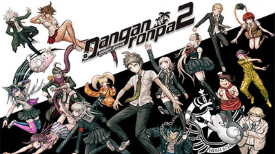

Family
Family Spotlight
Spotlight Career
Career Review
Survey
Review
Survey Favorites
Favorites Cause
Cause


Danganronpa 2: Goodbye Despair is the sequel to Danganronpa: Trigger Happy Havoc. The game's overall plot, mechanics, etc are relatively the same with a new spin on things. The story follows Hajime Hinata, a student who the player is first introduced to as we see him walking towards Hope's Peak Academy, an extremely prestigious high school that if you succeed in gaining acceptance, then you are essentially set for life. Because of this, however, it will only accept the most "elite", or "ultimate" (or "Super High School Level"in the original translation of DR: THH) students; the prodigies that definitely know what they are doing when it comes to their talents. As Hajime enters the academy, he finds himself stuck with the "Ultimates" in the killing game, a "game" in which all 16 students are forced to kill each other indiscriminently. this is where the game itself is split into three major parts per chapter: Daily life, where you get to do literally whatever you want, Deadly life, where a killing has happened, and things become more serious, and the Class trial, where the player is tasked with finding the "blackened" that committed the crime.
The player being prompted to spend
time with Chiaki Nanami.
Each chapter of the game starts out with Daily Life, which allows the player to explore the environment, play side mini-
games, or progress other characters' free time events, which are opportunities for the player to learn more about said
characters and strengthen their bond with them. The player is given multiple options to increase their bond with a character,
for example, by talking to them and giving them presents, which, in turn, will add pages to each student's Report Card, and
grant the player special skills which can give them an advantage during Class Trials.
The player is greeted with this stage of the game when a killing has unfortunately taken place. The player is instructed to
search all over the environment in order to find clues on who the culprit may be. Interacting with things and finding evidence
will grant the player "truth bullets", facts that are confirmed by the player and possibly some other characters. While the
player is unable to progress characters' free time events, speaking to certain characters will aid you in your investigation, as
you are able to gain their testimony for where they were and things they possibly saw, which will also grant the player a truth bullet. This overall could be useful
in finding contradictions and breaking through them in the class trial.
Class Trials are the final act of each chapter of the main Danganronpa games. The students debate amongst themselves, using evidence collected during the
investigation phase, to determine the culprit in each chapter. The debate takes place in a courtroom setting, and consists of several debate phases and
minigames. The trial ends when the culprit - known as the "Blackened" - is uncovered, and ultimately executed, or if the culprit isn't identified, the jury is executed,
ultimately ending the killing game and allowing the culprit to graduate.